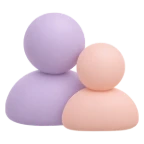
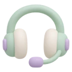
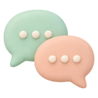
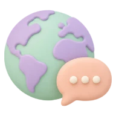

학생 회화
외국어로 말할 기회가 적었던 학생, 새 언어를 기초부터 시작하려는 학생
- 간단한 질문에 짧게 대답하기
- 짧은 문장을 이어서 길게 말하기
영어·일본어·중국어·프랑스어 등 배우고 싶은 언어를 현재 수준과 목적에 맞춰 시작해 보세요. 상담에서 희망 언어와 일정을 확인하고 화상·전화 수업을 안내합니다.

수강 대상초·중·고 학생부터 성인까지

수업 방식화상·전화 1:1
선생님원어민·교포 상담 가능
목적에 따라 연습할 주제와 표현이 달라집니다. 필요한 상황을 먼저 정하고 1:1로 진행합니다.
외국어로 말할 기회가 적었던 학생, 새 언어를 기초부터 시작하려는 학생
쉬운 말하기부터 다시 시작하고 싶은 성인
여행 중 필요한 대화를 미리 준비하고 싶은 분
일에 필요한 외국어 회화를 준비하는 분
영어·일본어·중국어·프랑스어 등 다양한 언어를 상담할 수 있습니다. 희망 언어의 수업 방식과 일정은 상담 시 확인해 드립니다.
TOEIC·TOEFL·OPIc·JLPT 등 어학 인증시험 준비를 현재 수준과 목표를 확인한 뒤 수업 방향과 함께 안내해 드립니다.
말하고, 피드백 받고, 다시 말하는 과정을 반복하며 표현을 내 것으로 만듭니다.
목표에 맞는 주제로 직접 말하는 연습을 합니다.
표현, 발음, 문장 구성을 바로 짚어 드립니다.
고친 표현을 다시 말해 보며 익숙해질 때까지 연습합니다.
기본 단어와 자주 쓰는 문장을 익히고, 간단한 질문에 짧게 대답하며 말하는 부담을 줄입니다.

중급실생활 표현과 문장 확장생활 속 상황별 표현을 늘리고, 짧은 문장을 이어 내 생각과 경험을 설명합니다.

고급자연스러운 표현과 상황별 회화주제를 정해 의견을 나누고, 업무·여행 등 목적별 실전 회화를 연습합니다.
학습자의 이해도와 말하기 속도에 맞춰 다음 단계로 이어갑니다.
수업 목적과 학습 수준에 따라 원어민·교포 선생님 수업 상담 및 배정이 가능합니다.
상담에서 함께 확인하는 것
| 화상 1:1 | 화면을 보며 선생님과 대화하는 방식 |
|---|---|
| 전화 1:1 | 음성으로 선생님과 대화하는 방식 |
전화·화상 수업은 같은 가격 기준이며, 희망 언어와 가능한 일정에 맞춰 상담에서 안내합니다.
주 2회 · 1회 20분 · 4주 총 8회 기준
152,000원부터
수강 기간은 6개월·9개월을 많이 선택하십니다.
배우고 싶은 언어와 회화가 필요한 상황을 남겨 주세요.
대화를 나누며 말하기 수준과 회화 목표를 확인합니다.
희망하는 선생님 방향과 화상·전화 수업 방식을 함께 정합니다.
정식 수업 전에 무료 시범수업으로 수업 방식을 먼저 경험해 봅니다.
시범수업 후 정규 수업 진행 여부를 결정하시면 됩니다.
배우고 싶은 언어와 현재 수준, 학습 목적을 상담으로 먼저 확인하고, 무료 시범수업으로 수업 방식을 경험해 보실 수 있습니다.
세부 진행 방식과 조건은 상담 시 안내드립니다.